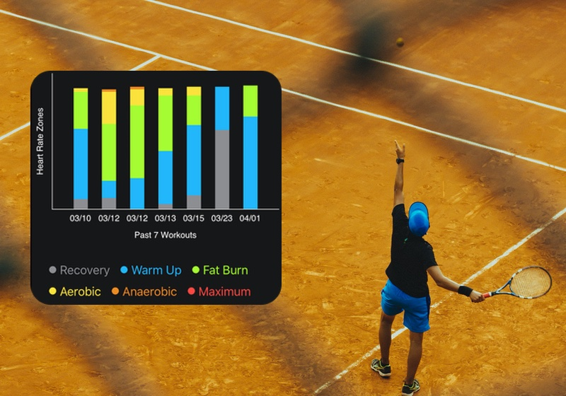
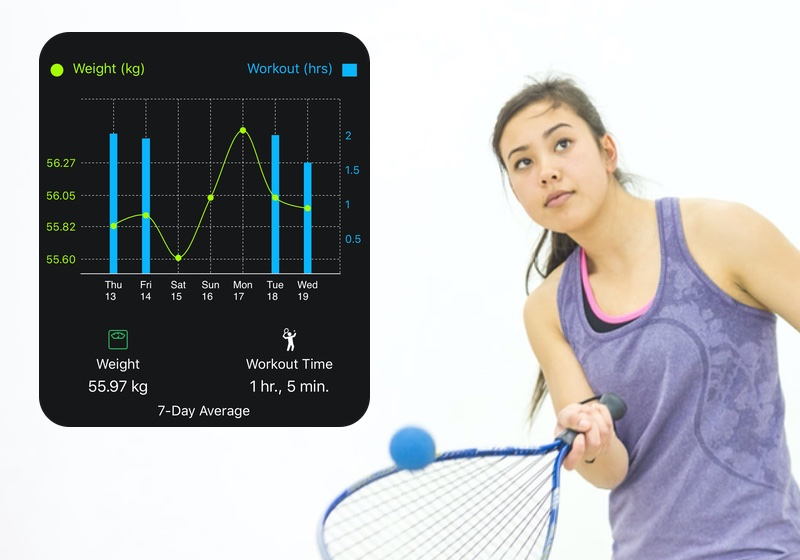
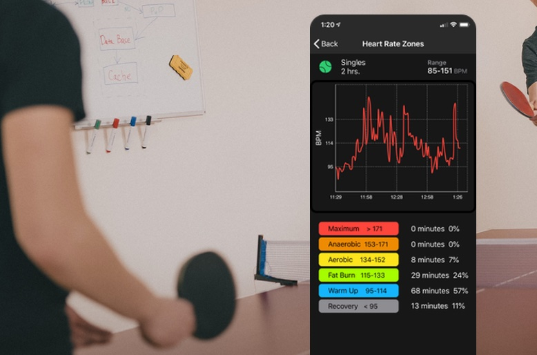

TennisKeeper Insights Pack combines your racquet sports workout with your Apple Health data so that you can answer questions like:
- How does exercise affect my sleep or weight?
- What can I do to burn more calories?
- Am I training too hard?
Here’s how TennisKeeper Insights Pack helps atheletes around the world gain insights on their day to day racquet sports training.
David, Tennis Player
David is an avid tennis player and plays tennis every day. He used to use different trackers to monitor his fitness and manually spent hours entering the numbers into Excel and correlate them. Now with his Apple Watch and TennisKeeper app, David can save a lot of time by simply connect and correlate his tennis workout data with his health data. Here is David's cardio zones for his past 7 tennis workouts:
 My cardio zones for the past 7 tennis workoutsLisa, RacquetBall Player
Lisa uses her Eufy Smart Scale to track her weight and body measurements every day. EufyLife connects and syncs her measurement to Apple Health. With TennisKeeper Insights Pack, she notices how playing Racquetball helps her lose weight. All that running around, back and forth, sprinting from side to side, burned a ton of calories. There is definitely a correlation between her workout and her weight.
 I lose weight when I playBob and Danny, Ping Pong Buddies
Bob and Danny work in the same office and play table tennis at their lunch break. Table tennis is a great cardio workout, helps strengthen muscles, mobilises the joints and sharpens reaction times. With TennisKeeper Heart Rate Zones graph, they can now see and compare their heart rate zones breakdown.
Adjust your playing intensity if you want to spend more or less time in each zone. Table tennis raises your heart rate and is a great cardio workout